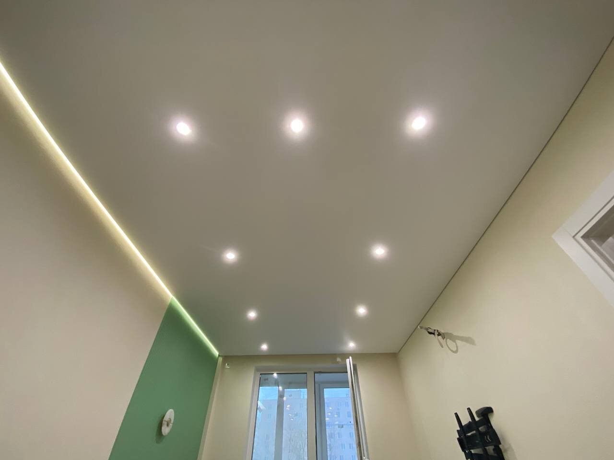
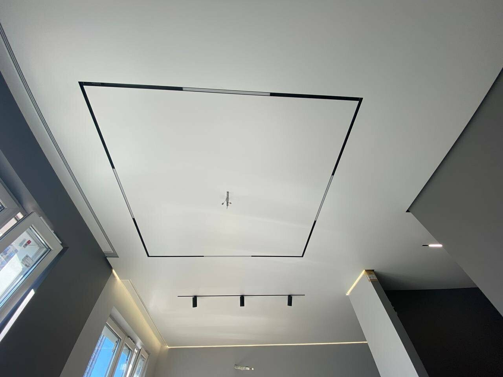

Королёв — фактически соседний город. Из Мытищ до него около 8 км, поэтому замер и монтаж можно согласовать на удобное время без длинной логистики.
В городе сочетаются новый фонд и дома старой постройки. В новостройках важно учитывать усадку и ровность перекрытий, в старом фонде — геометрию стен и скрытые коммуникации. На замере проверяем основание и подбираем профиль.
Работаем с ПВХ и тканевыми полотнами, делаем теневые, парящие и многоуровневые конструкции, подключаем свет и скрытые карнизы.
Районы и выезд
Дорога из Мытищ занимает 10–25 мин — около 8 км по дороге. Время зависит от пробок; точный выезд согласуем при заявке.
Что учесть в Королёв
Близко к Мытищам
Дорога занимает около 10–25 минут в зависимости от пробок. Можно приехать на замер в день обращения.
Новостройки и старый фонд
Подбираем профиль под усадку дома и состояние стен, проверяем перекрытия и коммуникации.
Районы города
Выезжаем в Болшево, Юбилейный, Первомайский, Костино и центр — уточняйте адрес при заявке.
Свет и карнизы
Делаем световые линии, треки, парящую подсветку и ниши под шторы в одном проекте.
Цены
| Вариант | Цена |
|---|---|
| Матовый потолок | от 890 ₽/м² |
| Глянцевый потолок | от 990 ₽/м² |
| Сатиновый потолок | от 950 ₽/м² |
| Теневой потолок | от 1 590 ₽/м² |
| Световые линии | от 1 450 ₽/м² |
Цены ориентировочные и зависят от площади, геометрии, профиля, света и состояния основания. Точную смету фиксируем после бесплатного замера.
Как проходит замер и монтаж
- Заявка: уточняем адрес в Королёв, площадь и удобное время.
- Замер: приезжаем с образцами, проверяем стены, высоту и коммуникации.
- Смета: фиксируем материалы, работы и срок в договоре.
- Монтаж: привозим комплект, устанавливаем потолок и убираем помещение.
Фото работ



Частые вопросы
Сколько ехать из Мытищ в Королёв?
Около 8 км по дороге, обычно 10–25 минут в зависимости от направления и пробок. Точное время выезда согласуем при заявке.
Выезжаете ли в Болшево и Юбилейный?
Да, работаем по всему Королёву, включая Болшево, Юбилейный, Первомайский, Костино и центральные улицы.
Можно ли ставить потолок в новостройке?
Да. Учитываем усадку дома, подбираем профиль с компенсационным зазором и проверяем основание на замере.
Сколько стоит потолок в Королёве?
Ориентир — от 890 ₽/м² за матовое полотно. Итог зависит от площади, профиля, света и дополнительных работ; точную смету считаем после замера.
Нужен потолок в Королёв?
Приедем на замер, привезём образцы и назовём точную цену. Выезд из Мытищ — 8 км.